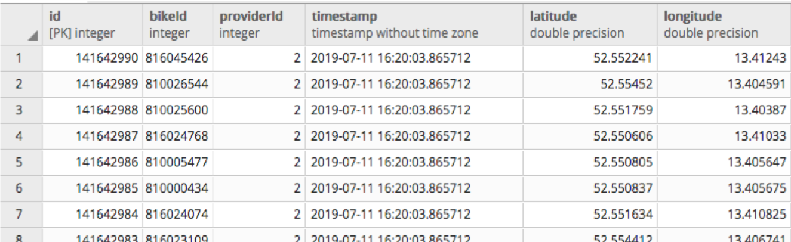

# Hands-on mobility data workshop ### 31.07.2019, Alexandra Kapp und Fabian Dinklage
## Agenda - Context: Why bike-sharing data - Data collection - Data cleaning and data quality - Data Visualization - Pseudonymisation - **Data Dive:** Brainstorm Ideas - **Data Dive:** Start Analysis
## Context - **Why bike-sharing?** - Detailed mobility data for whole Berlin - (Non)-existent obligations of providers - Many possibilities: - urban planning, - businesses (e.g. mobility apps), - monitoring of compliance with city laws (e.g. prohibited parking zones) - **Data:** - trips of three bike-sharing providers for Berlin over three months period
## Use Cases What are interesting use cases, analyses and visualizations that are possible with this data?
## Procedure <img src="./assets/images/procedure.png" alt="">
## Data collection - APIs of bike-sharing providers: real-time locations of all available bikes - **Challenge 1**: Getting Data off each API - [Details on different APIs](https://lab.technologiestiftung-berlin.de/projects/bike-sharing/de/) - **Challenge 2**: Collecting all trips - Query all APIs every 4 minutes - Run script via Uberspace server with a cronjob - store data in a database (AWS RDS Postgres Database)
## Data Collection - **Challenge 3**: Amount of Data - With queries every 4 minutes and approx. 10.000 bikes thats: - 150.000 rows each hour - 3.500.000 rows each day - 25.000.000 rows each week 
## Data Collection - **Challenge 3**: Amount of Data - After three month 20 GB storage was full - Start of daily cleaning script (again: cronjob on Uberspace): Delete all rows, were the location of the bike did not change (Reduction from 1.5 billion to 5 million rows) _ <img src="./assets/images/delete-duplicate.png" alt="">
## Data Cleaning [Jupyter Notebook with cleaning code](https://github.com/technologiestiftung/bike-sharing/blob/master/src/analysis/preprocess.ipynb)
## Data Cleaning:Implausible Peaks over time <img src="./assets/images/4am-peak.png" alt="">
## Data Cleaning:Implausible Provider
## Data Cleaning - **Raw:** 1,5 Billion rows - **After cleaning of database:** 4,9 Mio rows - **Remove data outside Berlin:** 4,8 Mio rows - **Merge locations to trips:** 2,4 Mio. trips - **Remove trips < 200 meters OR trips longer than 24 h OR trips faster than 30 km/h:** 0,5 Mio. trips - **Remove provider with implausible data:** 0,3 Mio. trips -- last slide Alex --
## How to approach large datasets - geospatial data analysis framework - variety of visualization layers out of the box available - visualize large-scale Geospatial Data Note: - In the next slides I'll unfold to you the process we went through while developing the visualization - We came to a point where we're generating tons of cleaned data - This leads to a couple of questions: such as how to handle and visualize these in an appropriate way - Before we go into detail about the handling let's have a look where this could lead to
## [Exploring use cases](https://deck.gl/#/examples/core-layers/geojson-layer-paths) Note: - If you want to handle large geospational datasets, visualizing them as nodes on the browser can be a pain in the ass - Fortunately there are many hardware accelerated solutions (Web.gl) - One approach is the geospational framework deck.gl - The framework provides a set of different layers - Preformed containers where you can just throw your data in - e.g. Points, Geojson, Polygon and many more - we decided to go with the trails viz but created other formats as well
## Data output - bikes-accessible.geojson - bikes-trips.geojson - bikes-trails.json Note: - To get the most out of the data we're generating a set of three distinct datasets - In order to accomplish that, a set of calculation steps were necessary
## Required steps - aggregate bike rows to trips - Creates (possible) routes with start- and endpoints - Calculate distances between waypoints ([Turf.js](https://turfjs.org/)) - Speed of bike trips - Save in appropriate data format for visualization Note: - we created a node script that accomplishes all these steps - sorted the db by bike id and time - if the time changes but location doesn't, the bike is accessible during that time - if time and location changes, the bike is being used - In the first iteration we used a service provider (Here, Osm, Google) to calculate routes between - Transfer db rows into appropiate geojson files - In the first step we did it for one weekend - Make use of the geojson format - Are you familiar with the structure of geojson format? if not
```javascript const geojson = { "type": "FeatureCollection", "features": [ { "type": "Feature", "geometry": { "type": featureType, // point, polygon, line and more ... "coordinates": [] // [lat,lng] here. }, "properties": { ... } } ] } ``` Notes: - Object with a key that holds an array - Each object in array represents one item, depending on the type your geojson has - Inside the properties key more data about the item that can be stored
```javascript [ { "vendor": 0, "segments": [ // all segments represent a trip [ 13.3782979, // longitude 52.5076544, // latitude 39497.8 // timestamp ], ... ] } ] ``` Notes: - so how does the data look like? - you have an array of objects - each object is a trip which is based on waypoints which the trail will follow offset: - deck.gl has to know when the trail should ba at a location to animate these between the points - when we decided to go for one type of visualization we have to bring the data into the right format
## The appropiate format - time - space - potential of time space related datasets Note: - After cleaning within the database (laying in the cloud of amazon) - Transfer db rows into appropiate data format - In the first step we did it for one weekend - Make use of the geojson format
## Pipeline - Query - Transform - find routes - create data structures - store data Note: - Before talking much longer let's just jump into the project for a second. - what we see are all bike trips of three bike providers mobike (blue), nextbike (white), lidl-bike (orange) which are longer than 750m - two days of raw data are already more than 1 mio rows - so we broke the data down to individual days because otherwise the data becomes to big
## How does it scale? - make available data inside visualization available (another **[cronjob](https://gist.github.com/fdnklg/2c784e82735a3122acf1c07009795fd4)**) - transform and write data daily (cronjob at **[uberspace](https://uberspace.de/en/)**) - create own routing service (**[osrm-docker](https://hub.docker.com/r/osrm/osrm-backend/)** at **[aws](https://docs.aws.amazon.com/efs/latest/ug/gs-step-one-create-ec2-resources.html)**) Note: - If you want to visualize up to date mobility data for each day a couple of steps are necessary - Automate your processes - To become independent from request limits of routing providers it's possible to use open source solutions like osrm - I just want to briefly tell you how the different services are working together - If you're interested how things work on a deeper level we can later dive into the code together
## Pseudonymisation -- slide Alex again -- - **NO** unique bike ID and **NO** provider ID given - Fields: - TripID - a unique ID - Start date & time rounded to the nearest 15 minutes - End date & time rounded to the nearest 15 minutes - StartLatitude - rounded to nearest 3 decimal places - StartLongitude - rounded to nearest 3 decimal places - EndLatitude - rounded to nearest 3 decimal places - EndLongitude - rounded to nearest 3 decimal places - TripDuration - duration of the trip minutes - TripDistance - distance of trip in miles based on company route data [Standard of Harvard Civic Analytics Network](https://data.louisvilleky.gov/dataset/dockless-vehicles)
## Data Dive - Ideas **get into small groups** **15 min** define research questions or sketch visualization ideas
## Data Dive - Data - Link to Data: xxx
## Data analysis - Option 1: Work with data yourself - Option 2: Follow examples of analysis in Jupyter Notebook - Option 3: Try out visualizations with DeckGL
## Results
## Contact: <!-- __citylab-berlin.org__ --> - @citylabberlin - citylab-berlin.org